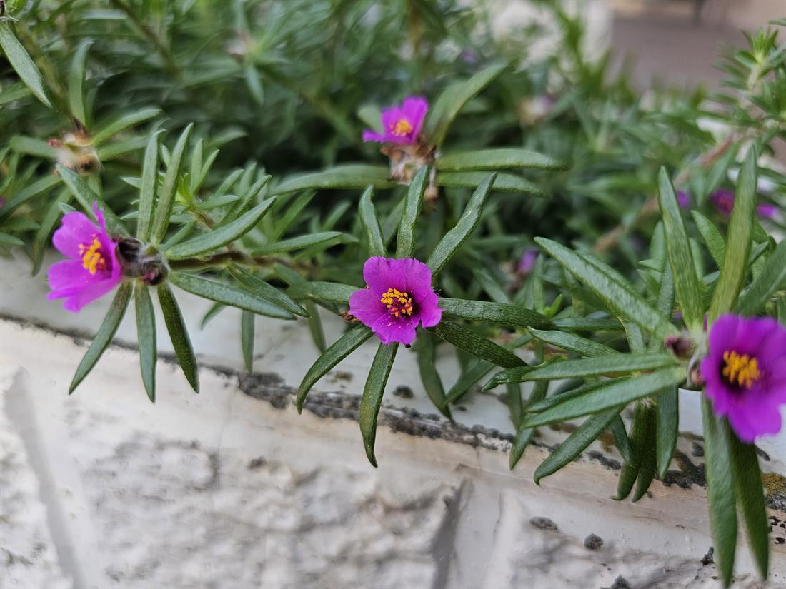

ポーチュラカ（ハナスベリヒユ）
Portulaca oleracea L. の園芸種
別名 · ハナスベリヒユ／タチスベリヒユ ／ 近縁にマツバボタン
スベリヒユ科 · Portulacaceae（スベリヒユ属）── この図鑑で初めての科
燻太さんの「名前がわからない」花見つけたよ＝ポーチュラカ見た目は素朴。でも中身は“二刀流”
名前がわかったよ ── ポーチュラカ（ハナスベリヒユ）
- 燻太さんが「名前がわからない」と言った小さいお花＝ポーチュラカ（ハナスベリヒユ）。Portulaca＝実が小さなフタで開くようす（portula＝小さな門）から。
- ⭐スベリヒユ科（Portulacaceae）は、この図鑑で初めての科。野生のスベリヒユ（道ばたの雑草・山菜）を、花が大きく色とりどりになるよう園芸化したのが、このハナスベリヒユ＝ポーチュラカ。
- 見分け：ポーチュラカ＝平たい披針〜へら形の葉（写真のとおり）。よく似たマツバボタンは葉が円柱状の針形。⚠日が当たると開き、曇り・夕方はしぼむ（太陽の花）。
⭐⭐ すごい省エネ ── C4光合成とCAM光合成、両方できる
- ⭐⭐スベリヒユの仲間は、C4光合成と、CAM光合成の“両方”ができる（とても珍しい）。
- C4光合成＝暑くて明るい昼に、効率よくCO₂を固定する“ハイパワー型”。CAM光合成＝乾燥がきびしいと、夜に気孔を開けてCO₂をため（リンゴ酸に変える）、昼は気孔を閉じて水を守る“省水型”（サボテンやマツバギク〈059〉と同じ技）。
- ⭐乾き具合に応じて、この二つを切りかえる＝だから炎天下の花壇でも、水が少なくても、平気で咲く。燻太さん（分子遺伝学者）には、この「C4とCAMを併せ持つ」ところが、とびきり面白いはず。
- ⭐おとなりのマツバギク（059）はCAMの多肉。二種類とも「暑さを生きる達人」だけれど、ポーチュラカは“二刀流”。